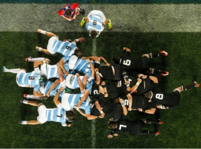

- No se permite pasar el balón hacia adelante. Tampoco se permite que el balón caiga hacia adelante, lo cual se denomina knock-on.
- El balón sólo puede avanzar llevándolo o pateándolo hacia adelante.
- Cualquier jugador en el campo de juego puede avanzar con el balón.
- Únicamente está permitido bloquear al oponente que lleva la pelota, no se puede bloquear a un oponente que no lleva la pelota consigo, a diferencia del fútbol americano.
- El rugby es un deporte continuo. No se preveé interrupciones (a menos que haya una lesión.).
- Un scrum reinicia el juego después de un pase hacia adelante o un knock-on. También se forma un scrum en otras ocasiones menos frecuentes.
- Un line-out reinicia el juego cuando el balón sale del terreno de juego.
- Un Try es otorgado cuando el balón es llevado mas allá la línea de goal (zona de anotación) y apoyado en el suelo.
- 5 puntos se otorgan al realizar un try.
- 2 puntos se otorgan al convertir la patada adicional después de un try.
- 3 puntos se otorgan al convertir un gol de campo (golpe) después de cometida una infracción.
- 3 puntos se otorgan al convertir un drop (patada de bote-pronto) en juego abierto.
- Después de que se convierte un ensayo/try o un penal, el balón es pateado hacia el equipo anotador (excepto en sevens, rugby con siete jugadores por lado).
- El árbitro es el responsable de hacer respetar el reglamento.
- Se juega en dos tiempos continuos de 40 minutos cada uno con un intermedio de 5 minutos.
- El tiempo lo lleva el árbitro principal y debe detenerlo solamente cuando haya lesiones.
- Hay dos jueces de línea que ayudan a indicar cuándo el balón o la persona que lo lleva salen del campo de juego.
Reglas basicas
Tackle (placaje o derribo)
Una de las reglas fundamentales del rugby es el llamado tackle en el reglamento publicado por la WR, regulado en la ley 15: Un tackle tiene lugar cuando el portador del balón es sujetado por uno o más adversarios y es derribado al suelo. Un portador del balón que no está sujeto no es un jugador tackleado y por tanto no ha tenido lugar un tackle. A los jugadores adversarios que sujetan al portador del balón y llevan a ese jugador al suelo, y que también van al suelo, se les llama tackleadores. Los jugadores adversarios que sujetan al portador del balón y no van al suelo no son "tackleadores".
Las leyes del juego hacen especial hincapié en evitar y sancionar severamente el juego peligroso, aun cuando no sea intencional. El tackle no puede realizarse mediante un golpe directo con el hombro o un brazo rígido. Se prohíbe explícitamente el tackle alto, que es aquel por el cual el jugador que lleva la pelota es tomado por encima de la línea de los hombros, aun cuando el tackle se haya iniciado por debajo. La World Rugby tiene una política de tolerancia cero respecto del contacto con la zona de la cabeza.
A partir del 3 de enero de 2017 la WR estableció una serie de medidas y definiciones para reducir la discrecionalidad y aumentar las sanciones ante los tackles altos.1514 En las nuevas medidas la WR define dos tipos precisos de tackle alto: el "tackle temerario" (reckless tackle) y el "tackle accidental". Se considera "tackle temerario" cuando el jugador sabía o debería haber sabido que existía el riesgo de contacto con la cabeza y aun así siguió adelante y debe ser sancionado como mínimo con tarjeta amarilla (exclusión de la cancha durante un tiempo). Cuando el contacto con la cabeza sea accidental (tackle accidental), corresponde como mínimo cobrar penal
Line out
Cuando el balón, o el jugador que lo lleva, salen del campo por la línea de touch, el juego se reinicia mediante un saque de banda llamado line out que debe arrojarse recto y superando la línea ubicada a cinco metros campo adentro del touch entre dos hileras de jugadores, una de cada equipo y separadas por una distancia de un metro. Los jugadores deben saltar para obtener la pelota, pudiendo ser impulsados y sostenidos por sus compañeros. El lanzamiento le corresponde al equipo que no la envió afuera, salvo que haya sido consecuencia de un penal, en cuyo caso debe lanzar el equipo que pateó. El equipo que lanza la pelota decide también cuántos jugadores va a haber en la hilera (de 2 a 14), mientras que el otro equipo puede tener menos pero no más. Todos los demás jugadores, excepto el lanzador, un opuesto al lanzador del equipo rival, y un receptor por cada equipo, deben alejarse diez metros hacia su campo de la línea perpendicular al touch por donde se arrojará la pelota.

La posición en la que se efectuará el tiro no es necesariamente aquella en que el balón cruzó la línea de touch. Si el balón fue pateado por un jugador por delante de su línea de 22 metros, o por detrás de ella cuando es el equipo defensor lo introdujo en su zona de 22 metros, entonces el lanzamiento debe efectuarse en línea con el lugar desde donde se pateó. En cualquier caso, el equipo que debe reponer la pelota en juego puede decidir efectuar un “tiro rápido” en cualquier lugar entre su línea de goal y la línea en que debe formarse el line out; pero para ello deben cumplirse ciertas condiciones: que se utilice el mismo balón que salió del campo, que no haya sido tocado por nadie excepto el jugador que lanza (y eventualmente por el jugador rival que salió fuera del campo con el balón), y que no haya principiado la formación del line out. En el tiro rápido no se requiere que el balón sea arrojado paralelamente a las líneas de goal: puede enviarse oblicuamente hacia la línea de goal del lanzador, pero debe superar la línea de cinco metros paralela al touch. La pelota no debe arrojarse intencionalmente con las manos al touch. Esta acción es considerada juego sucio y castigada con un penal desde el lugar del punto de la cancha.
Scrum
Scrum en rugby es una formación fija cuya función es disputar la pelota y volver a ponerla en juego, luego de una falta menor. El scrum se forma mediante el enfrentamiento de dos bloques de jugadores enlazados, los packs, correspondiente cada uno a cada equipo. Cuando se va a realizar un scrum cada uno de los equipos forma un bloque con sus ocho delanteros o forwards, siguiendo una estructura de tres líneas establecida en el reglamento. Una vez formados, ambos packs deben agacharse y ubicarse uno frente al otro, para tomarse y esperar la indicación del árbitro para empezar a empujar con el fin de avanzar sobre el otro y obtener la pelota
